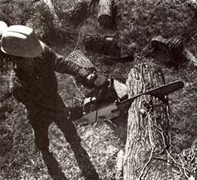
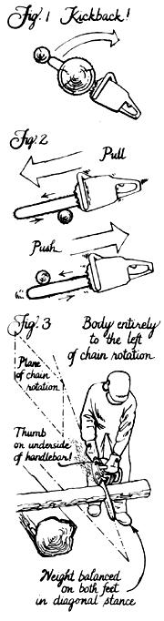
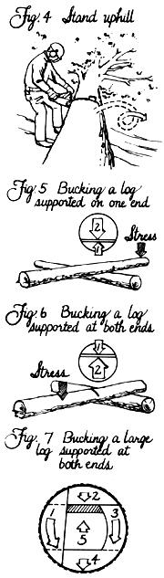
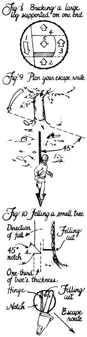
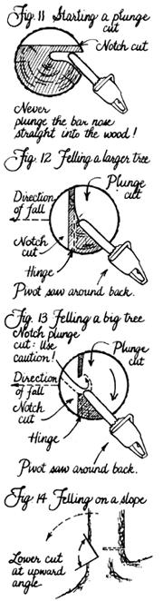

From Mother Nos. 54 and 55
Mother's Handbook
Rural author Noel Perrin once said, "If I were to move to an old-fashioned farm, everything quaint and handmade like a scene from Old Sturbridge Village, and could bring just one piece of modern machinery with me, I wouldn't hesitate a second. I'd bring my chain saw." Perrin was right-a chain saw is that important to country living. And as far as MOTHER's concerned, Barnacle Parp's Chain Saw Guide is that important to proper chain sawing. Over six years ago, in issues 54 and 55, we excerpted two hefty chunks of Walter Hall's entertaining, readable, and-most important-useful woodcutting manual. (Parp, by the way, is Hall's experience-wise sawyer self.) In fact, when the book went out of print a couple of years ago, we decided it was too good to let die . . . so we got Walter to update it a bit and then reprinted it ourselves!
Parp's Guide remains the standard handbook to selecting, using, and caring for that dangerous, but well-nigh indispensable, machine-the chain saw. So we're very-pleased to have the chance to re-present here in issue 100 some of this basic-and vital-information on working up wood. Safe cutting and warm fires to you!
Many aspects of chain saw work present potential threats to your health and safety. First is the obvious danger of the cutting attachment itself. It is meant to cut wood. It will also cut meat. When you operate a chain saw, you must constantly be alert and take whatever precautions you can. A lot of things can go wrong.
Kickback is the most common cause of wounds. It causes 30% of all chain saw injuries. Kickback occurs when the chain, as it speeds around the upper part of the nose of the bar, comes into contact with something solid (Fig. 1). When the chain is at the upper third of the nose, it can't cut efficiently, and its movement forces the bar back and up, in the direction of the operator. If for any reason you have to cut with the nose of the bar, be sure to start the cut with the lower part of the nose, and be sure the saw is running at high speed as the chain touches the work. You should definitely avoid boring or using the nose of the bar until you are familiar with operating chain saws.
When you operate your chain saw, be alert for kickback at all times. Always cut with your left elbow locked or with your arm as straight as possible. Cut only one log at a time. Take every precaution to be sure that the nose of your bar does not touch anything. Always cut as close to the engine end of the bar as possible. Use your saw's bumper spikes to grip the wood and to provide pivot and balance for your saw.
Another problem caused by the chain is the pull or push that occurs when the chain catches in the work at the middle of the bar (Fig. 2). Push occurs when the top of the bar hits the log; the chain catches in the wood, and the saw is forced violently back toward the operator. Similarly, pull occurs when the work is forward of the bumper spike; the chain catches and violently pulls the saw forward until the spike hits the wood. These two hazards are most likely to occur if the saw is not running at full speed as the chain hits the work, or if the operator isn't holding the saw firmly.
Certain safety precautions can help prevent chain-caused injuries. Competence and alert ness are the operator's best protection. Next is proper clothing. For most of us, ordinary snug work clothes are best. You should certainly avoid wearing bulky or loose coats, sweaters, or gloves when you're working with a chain saw. Trousers should be snug and cuffless. Parp prefers ordinary jeans.
The cutting chain can also cause injuries when it breaks. A chain-catching pin built into the saw can protect the operator by stopping the chain before it flies into the body. Hand guards for the front and rear handles also help. Even when a chain catcher stops the broken chain, the end can still reach the operator's right hand. Many recent chain saw designs incorporate a large guard to protect the right hand. Snug leather gloves can also help. Either goggles or a face mask and a hard hat protect the operator's eyes, face, and head from flying chain.
In addition to the cutting attachment, other aspects of the chain saw present hazards to the safety and health of the operator. Any prolonged session of chain saw work increases the chance that vibration and noise will endanger your health. You should, if possible, avoid working for more than six hours in one day. For most of us, that's no problem. The wood still has to be split and stacked, and there are valleys to look at, fish to catch, and things to think about. And that's good. On those rare occasions when you must operate your saw for extended periods, or if you're about to become a logger, at least be sure to wear ear protection and take frequent breaks. Parp tells of getting that awful ringing in his ears and not being able to get rid of it for three days. It really is extremely unpleasant, and it can do a lot of damage before you know it. Good, inexpensive, professional earplugs are available from Bailey's (P.O. Box 550, Highway 101, Laytonville, CA 95454 or P.O. Box 9088, 1520 South Highland Ave., Jackson, TN 38314).
As for the vibration, stop working when it starts to bother you (after four or five hours or so). Never operate a chain saw when you're fatigued. That vibration can cause your muscles to turn to jelly without warning. It's a temporary condition, but it can be very dangerous if you and your saw are in a bad position or if kickback catches you by surprise.
Other dangers from the saw itself are related to the fuel. Always move your saw at least ten feet from the fueling point before you start it. The heat of the saw and unexpected sparks from the saw or the chain can start a big fire fast, and the saw can explode. Don't take that fact lightly. It has happened. Always store fuel in properly marked containers that are designed for that purpose. Keep the containers tightly sealed and safely stored away from any open fire or heat source. If you spill fuel on your clothing, don't operate your saw until you change. If the fuel cap should come off while you're running your saw, immediately switch the ignition off, or kill the engine by choking it to full choke. Never use gasoline for cleaning.
Proper cutting techniques can help protect you from most of the dangers coming from the wood. They can help keep trees from falling in the wrong direction, stressed limbs from snapping your head off, and rolling logs from crushing your legs. But proper cutting techniques can't protect you from the falling limbs that we call widow-makers. Obviously, large, dead limbs are dangerous. The vibration of your saw in the tree's trunk can cause them to fall on you. Parp's only suggestion is to avoid cutting under limbs that might fall or to have a watching helper warn you when one does. You can rehearse signals to facilitate your escape.
Small falling limbs are the ones that can surprise you with their speed, power, and deadly sharp points. They come down like spears and can penetrate several inches of frozen ground-or anything else that happens to be in the way. All Parp can say, faintly, is that felling trees is dangerous. If you're not up to it, buy logs or mill-end slabs and use your chain saw to cut them up on sawbucks. If you are going to cut down trees, you should most certainly study the tree, use the cutting techniques recommended here (a lot of research and experience are behind them), stay alert, and wear a hard hat at all times. When you hear something snap and start to fall, leave your saw and retreat quickly.
Chances are you'll be alone with your chain saw often. Carry a whistle . . . a good loud one. If you get pinned by a tree, cut yourself, or break a leg, you can blast on the whistle. Someone will probably hear you, almost anywhere.
Now practice holding your chain saw and simulate a working stance (Fig. 3). Space your feet far enough apart to permit a firm but comfortable balance. Grab the handles as if you mean it. Hold the saw firmly with both hands, with your thumbs curled around the handles. When you're bucking a log or working on the woodpile, you should keep your left elbow locked or your left arm as straight as possible. Then if the saw does kick back, you have more strength behind it to protect you. The saw will throw your arm up, on a pivot from your shoulder, instead of collapsing your arm backward with the saw coming straight at you.
It's not a contradiction to say that you should work close to your saw. Don't be afraid of it. If your right arm is stretched, you will tire quickly and increase the chance of kickback. Hold the saw firmly and work close to it. When it's possible or convenient, as in limbing, keep the work between you and the cutting attachment of your saw.
Practice moving with and holding your saw until you are comfortable doing so. (Don't, however, walk with a running saw.) Also, become familiar with the location of all controlsespecially the ignition switch, or "kill" switch, and the oiler control. If your saw has no ON/OFF switch, you must kill the engine by fully choking it. Get used to reaching that choke control. There will be many times when you'll want to turn that thing off fast without looking at it-when you're watching a tree fall unexpectedly, for example.
Whenever you cut, be sure the engine and the chain are going full speed when the chain touches the wood. Then let the saw do most of the work. Don't force the saw into the wood. Pivot the saw on the bumper spike. Use plenty of chain oil (pump the oiler every ten seconds to break in a new saw). Keep your body just slightly to the left of the plane of chain rotation. Hold the saw firmly. And don't be afraid. You are in charge.
Out there in the woods, we're going to be cutting all sizes and kinds of wood, under various conditions. How do we avoid limbs that snap back and logs that roll? We'd better look at some woodcutting situations.
Plastic or homemade wooden wedges will be useful tools. In many cases, simply using a wedge will save a guide bar from being .pinched in a cut. A pinched bar is often bent so badly that it makes continued cutting difficult or dangerous, so it is definitely to be avoided. If you're going to buck a log that's lying fairly flat on the ground, so that its weight is supported by the ground for its entire length, use a wedge to keep the kerf open enough to avoid pinching the bar (Fig. 4). Or make a series of overbucks, then roll the log over and finish from the other side. Remember to work on the uphill side and avoid cutting into the dirt.
The first thing to consider in any more complicated woodcutting problem is the stress factor. If we analyze the stress conditions before we cut, we'll avoid many problems.
The general rule is first to cut the side of the log where the wood is compressed by the stress, then cut the side on which the wood is under tension created by the same stress. For example, when a log is supported on only one end, the compression of the wood occurs on the underside of the log, while the wood in the upper portion of the log is under tension. On the other hand, if a log is supported at both ends, the compression occurs on the top side, while the tension occurs on the underside. Always stop to analyze the stress before cutting (be especially careful of tree limbs bent against the ground), and always cut the compression side first and then the tension side.
With a huge log supported on one end only, we must minimize the amount of stress at the moment the cut becomes complete. A wedge won't help in this situation because it would increase the stress, rather than decrease it.
So let's start our cut from the underside of the log by cutting upward with the top side of the guide bar (called pulling chain) until we've cut about a third of the way through. Then we can finish the cut from the top of the log, and the stress at the moment the cut is complete will be considerably lessened. The log will be unlikely to split, and the cut end will simply fall free as soon as our top cut meets our bottom cut (Fig. 5). Note that this procedure is made much more difficult, even impossible, if the saw won't cut straight because of a bent bar, an improperly sharpened chain, or unevenly filed bar rails.
Now suppose our large log is supported on both ends. The top side is the compression side and the bottom is under tension. To avoid splintered wood and a pinched bar in this situation, begin this cut with a one-third overbuck. Then finish the cut from underneath, with an underbuck (Fig. 6). Make both cuts at a slight angle so the bar isn't pinched in the kerf when the log settles. The top of the cut should angle slightly toward the end of the log that's being cut-that is, the short end. Another trick to avoid pinching the bar is to make the two cuts so they aren't directly opposite each other, but are still close enough for the log to come apart when the cut is complete.
Now let's say we have two logs that are both larger in diameter than the length of our guide bar. One log is supported on both ends, the other on only one end. In both cases, we'll have to make a number of cuts in sequence. The idea in sequence bucking of thick logs is to leave a break-off hinge of uncut wood in whichever third of the log is affected by compression.
Our first log is supported on both ends. Since the stress causes the compression to occur in the upper third of the log, that's where we'll want to leave our hinge. To buck this log (Fig. 7), first make a one-third cut on the far side. Then overbuck to leave a thin hinge in the upper third of the log. The third cut, on the close side of the log, brings the saw into position for the fourth cut, an underbuck. Finish with a fifth cut from underneath to take out the hinge. The log will then fall; watch your feet.
Our second log is supported on one end only, so we'll want to leave our hinge in the compressed lower third of the log to prevent splitting (Fig. 8). Again, make your first cut on the far side of the log. Make the second cut an underbuck to create the hinge. The third cut is on the close side, the fourth is an overbuck, and the fifth takes out the hinge from above.
Now let's practice cutting down a small tree. Pick one that's fairly straight, so we can control the direction of its fall. (It's very difficult to fell even a small tree against the direction of its lean.) Also, we want a tree that we're sure will fall in a safe direction, away from power lines, buildings, cars, and such.
Next, study the tree as you're walking toward it. Try to estimate its center of gravity, its direction of lean, and which side is most heavily weighted with branches. Now make sure that no one will come within the radius of the tree in any direction. Then clear a large area all around the tree. Clear away any brush or debris that could catch fire, trip you, or cause kickback. Clear an escape route away from the planned direction of fall and at a 45° angle to it (Fig. 9). Don't plan on running directly opposite to the direction of fall, since the tree may well fall exactly opposite to the way you planned.
The notch determines and controls the direction of the tree's fall. The felling cut removes most of the wood still holding the tree and causes it to break and topple. The notch and the backcut must always be made so as to form a hinge of uncut wood (Fig. 10). As the tree falls, it pivots on this hinge, breaking it. Never cut all the way through any standing tree with a single cut, no matter what the tree's size.
Move to one side of the tree, facing the planned direction of the fall. Aim across the top of your saw, along your front handle or across the falling sights (usually cast ribs in the saw's main housing), at exactly the place where you want the tree to fall. This will correctly line up your guide bar with the trunk.
Now make the upper cut of the notch, sawing down at an angle so that the cut, when completed, will go about one-third of the way into the trunk. Never cut as far as halfway into a tree with any cut in the notching procedure. Doing so will make the fall uncontrol lable. Next, make the lower cut to complete the notch and remove the wedge of wood. With a straight tree on level ground, make this second cut straight in to meet the first. The hinge of uncut wood will be created when you make your felling cut.
Now go behind the tree to make your felling cut. This is another horizontal cut, at least one inch (more, for large trees) above the horizontal notch cut. It is extremely important not to make the felling cut meet the horizontal notch cut. It must be at least an inch or two higher.
When your felling cut is partway complete, insert a plastic or wooden wedge into the cut, behind your bar but not touching it, to prevent the tree from settling back onto your bar and to help control the direction of the fall. Then keep an eye on the top of the tree and continue cutting until the tree begins to fall. Don't cut all the way through to your notch. As the tree starts to move, leave your saw on the ground and retreat quickly along your planned escape route”while glancing back over your shoulder to be sure the tree doesn't turn around and come in your direction. Remember that the butt end of the tree may kick backwards and that unseen dead branches may fall straight down or fly in any direction. Take no chances. Retreat quickly and without hesitation.
To cut a tree with a diameter larger than, but not twice as large as, the length of your saw's guide bar, use the following method. Exercise great caution, because the technique involves making a plunge cut that greatly increases the risk of severe kickback. This procedure is definitely not for the novice cutter. Make a notch, as before . . . it may, however, require four cuts to complete. You should make one-half of the upper notch cut on one side and then move to the other side of the tree to complete it. Do the same with the horizontal cut.
After the notch is formed, make a plunge cut to one side of your planned felling cut. Start this cut about an inch or two above the base of the notch, keeping your bar horizontal. To minimize the danger of kickback, start the plunge cut with the underside of the tip of your bar and slowly cut inward (Fig. 11). When the bar has cut a few inches into the tree, cautiously straighten the saw to begin boring straight inward with the tip of the bar, being careful to leave adequate wood for the hinge. (Your bar should bore into the tree more or less parallel with the back of your notch, not toward it.)
When your plunge cut is about halfway into the tree, proceed to complete the felling cut by sawing around the tree, toward your planned escape route. In other words, make a pivot with the tip of the bar up against the hinge (Fig. 12). Insert a plastic or wooden wedge behind your bar as soon as you pass the halfway point-but not before, as that would tend to spin the tree away from your desired angle of fall.
To fell a tree having a diameter more than twice as great as the length of your guide bar, only one additional cut is necessary. This time, the extra cut is in the notching operation and, in effect, cuts the hinge in half. Make a notch, as before. Then make a plunge cut in the back center of the notch, right in the center of the tree (Fig. 13). The plunge cut should be approximately twice the width of your guide bar.
Now from the felling side of the tree, make another plunge cut that meets the first, then pivot around the tree to make the felling cut. Place your wedge as early as possible, and be careful not to cut through the hinge.
Note that if you fell a large tree on a slope, you should make the bottom notch cut at an upward angle to provide more control during a long fall (Fig. 14).
And, through all your woodcutting, remember to take it easy. Take frequent breaks to keep both you and your saw sharp. That way you won't have to learn how to split wood with one hand in a cast.
EDITOR'S NOTE: Barnacle Parp's New Chain Saw Guide is available for $12.95 plus $1.98 shipping and handling from Mother's Bookshelf, P.O. Box 70, Hendersonville, NC 28793.
|
 |
 |
 |
|
 |
 |
|